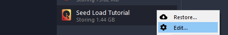

Seed Load Walkthrough ¶
Overview ¶
This is a graphical walkthrough of the Seed Load process. For customers with slow internet connections, or with large data volumes, it is possible to perform the initial backup to a local external drive and then courier it to the backup server administrator. Comet Backup supports this technique under the name "Seed Load".
Process ¶
Step 1 ¶
On the Comet backup client application, create a new "Local Path" Storage Vault. This will initially represent the seed device, and will later represent the remote device.

{kind=link}
{kind=link}
Step 2 ¶
Perform a backup to that Storage Vault.
{kind=link}
Now we have successfully backed up the data to the seed load device and the next step is to bring that data to your Comet server.
Step 3 ¶
Create a new Bucket on a Comet Server
{kind=link}
{kind=link}
{kind=link}
WARNING: This new bucket is currently unused. It will be used soon, but if you have Constellation enabled and deleting unused buckets, then Constellation may delete the bucket before the seed load process is finished. You should set the Constellation option to prevent it deleting unused buckets, and re-enable it only after the Seed Load process is complete.
Step 4 ¶
Navigate to the Storage Vault's directory on the seed device and move the content into the new Bucket's directory.
By default, the Bucket's data directory will either be (A) empty, or (B) contain only empty directories. Do not continue if the paste operation warns you that files will be overwritten.
Copy the seed load vault's data:
{kind=link}
Paste the data into the Bucket Directory:
{kind=link}
All on-disk paths are identical between "Local Copy" and "Comet" vault types. Your Comet Server will see the files immediately and does not need to be restarted.
Step 5 ¶
Edit the client's Storage Vault settings in the to point to the Bucket.
It's very important that you change the existing Storage Vault, not create a new Storage Vault, because the data is encrypted with properties from this specific Vault.

{kind=link}
Step 6 ¶
Test backup/restore from the Storage Vault's new location.
{kind=link}
{kind=link}